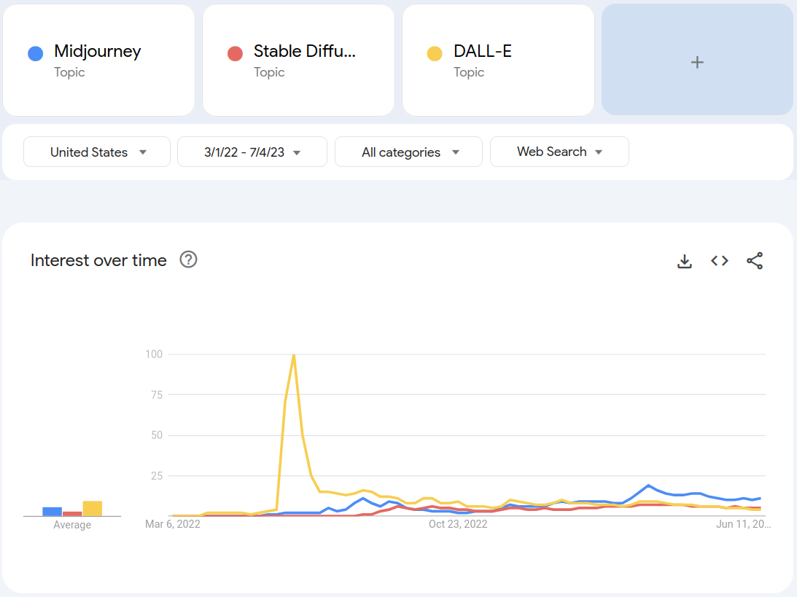
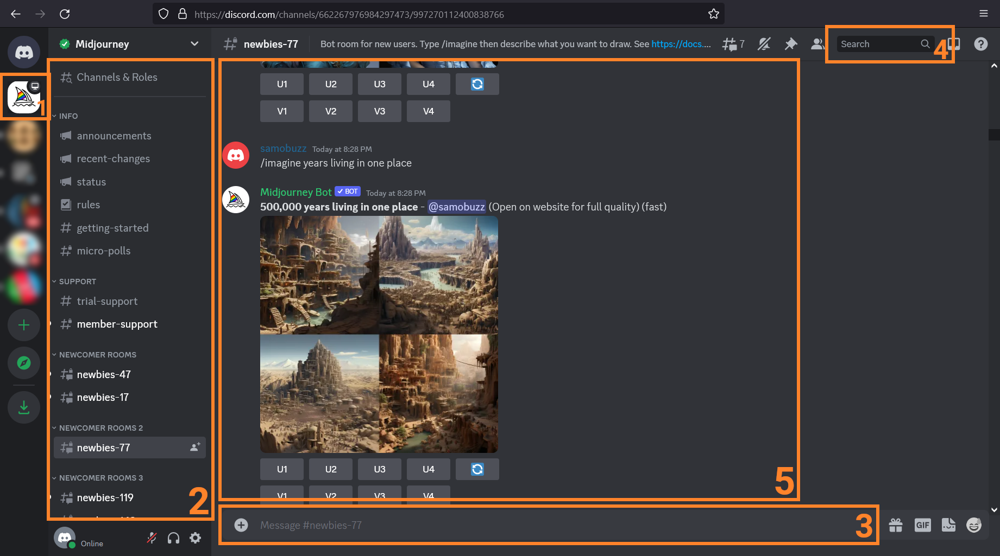
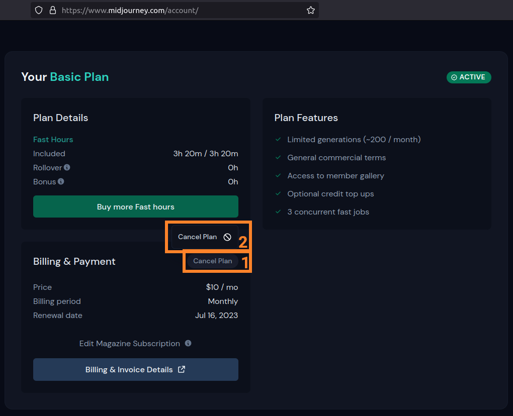

Over the past decade, the field of generative AI has made amazing progress. Driven by breakthrough advances in machine learning modeling strategies (primarily the GAN 1 in 2014 and the Transformer 2 in 2017) coupled with exponential growth of the amount of available computing power 3, generative AI applications for different data formats started appearing in the late 2010s and early 2020s. Notable examples include
- improvements to Google Translate (2017 4),
- fake face generation at thispersondoesnotexist.com (2019 5),
- molecule structure discovery with AlphaFold (2020 6),
- text-to-speech in different voices with tools like Uberduck.ai (2020/2021 7),
- general AI apps in HuggingFace’s Spaces sandbox (2021 8), and
- text-to-image services (major options: DALL-E, Stable Diffusion, and Midjourney, 2021).
Over the past two years, text-to-image platforms have jockeyed to lead that market with DALL-E generating a massive amount of initial hype, but Midjourney has emerged as the clearly superior service, despite having the least conventional workflow.

Midjourney’s model was the first to reliably produce human forms (including well-formed hands, a difficulty for prior models), its best outputs are unambiguously superior to the best outputs from any other model, and it’s tremendously fun to play with. Midjourney isn’t free to use (the least expensive tier is \$10/mo), but it’s free to look at (or search) the endless stream of images generated by other Midjourney users, it’s easy to unsubscribe, and it’s hard to not get at least \$10 worth of fun out of the service.
In this post, I’ll point out the important parts of the interface, walk through setup and (un)subscription, demonstrate useful commands, and show examples of what Midjourney can do.
Midjourney Interface
The Discord interface is packed with buttons, lists, and inputs, but you only need to know 5 areas you need to know.
- The Midjourney server icon
- This, the ship icon, should always be selected.
- The Channel list
- Pick any “newbies-##” or “general-##” channel.
- The Prompt input
- This is where you enter prompts or commands for the Midjourney Bot to handle.
- The Search bar
- You can search through all public images in the Midjourney server.
- The message display space
- This is where you’ll find all (public) images generated in the selected channel (either by you or other users).

Setup and Subscription
Midjourney runs out of the Midjourney Discord server, so you will need to make a Discord account and then join Midjourney’s Server. Log in to Discord (you can use Discord in your browser), go to the Midjourney Server, go to any newbie channel, and enter the /subscribe command. This will produce a link (specific to your Discord account) for the subscription page. Go to that link and pick a plan.
The least expensive tier is $10 per month (for about 250 images per month) and you can have full usage rights*9 of the images you generate (at least as of 2023; the legal status of this technology may change in a few years10).
How to unsubscribe
To unsubscribe, go to the Midjourney account page, click Cancel Plan (1, then 2), and then confirm cancellation in the popup. If you’ve used less than 20 GPU minutes (~30 images) in the billing period, you can choose to get a refund.

Commands
- /imagine: This command lets you enter an image-generating prompt. It’s the main command you’ll use.
- /info: This command shows the number of GPU minutes you’ve used that month as well as basic subscription information for your account.
- /subscribe: Enter this command to get a link to the subscription page for your Discord account. Use this to subscribe to a plan.
- /help: This command shows basic commands and tips.
There are a few more commands, but you’ll mainly use /imagine and /info.
Prompt Parameters
You can add parameters on to the end of your image prompt to
Aspect Ratio
The desired aspect ratio for an image.
- Parameter:
--ar l:wor--aspect w:h(wherewis widthhis height) - Examples:
--ar 1:1(square, default)--ar 9:16(good for stories; typical phone screen aspect ratio)--ar 19:10(good for covers or landscapes)--ar 4:5(good for portraits)
Quality
Controls the rendering quality (i.e., amount of CPU time spent generating an image).
- Parameter:
--q valueor--quality value - Accepted
values: [0.25, 0.5, 1] (higher values = higher quality, default is 1) - Example:
--q 0.25
Stylize
Influences how strongly Midjourney stylizes an image.
- Parameter:
--s valueor--stylize value - Accepted
values: 0 to 1000 (lower values = simpler, higher values = more intricate, default is 100) - Example:
--s 1000
Negative prompting
Allows you to strongly signal something should be excluded from an image.
- Parameter:
--no value - Accepted
values: Any text. - Example:
--no plants
The full list of parameters is available here
Summary
It’s a neat tool, and it makes it very easy to generate custom graphics (if you don’t need it to include exact words or accurate diagrams). I’m not sure how it will imapact the market prospects for graphic artists, or whether it will be legal in a few years (pending lawsuits or legislation), but it’s a lot of fun today.
Footnotes
Ian Goodfellow et. al’s paper (2014) presenting the Generative Adversarial Network (or GAN) deep learning model architecture.↩︎
Google’s famous Attention is all you need paper (2017) which presented the Transformer deep learning model architecture.↩︎
OpenAI’s 2018 analysis of available computing power (or “compute”) and the amount of compute needed to train models.↩︎
Google’s “Transformer: A Novel Neural Network Architecture for Language Understanding” blog post (2017) outlining how Google used Transformers to generate more accurate translations in Google Translate.↩︎
Before or on Feb 11, 2019, This Person Does Not Exist came online, generating a hyperrealistic but fake image of a human face.↩︎
In late 2020, DeepMind (a subsidiary of Alphabet) announced AlphaFold2 a reengineered version of their protein-structure prediction system, which uses transformers to predict much more accurate representations of proteins. Understanding the molecular structure of complex proteins makes it possible to determine what molecular groups are exposed on the outer surface of the molecule, which is useful as only those exposed groups can interact with groups on other molecules.↩︎
In late 2020, uberduck.ai introduced a text-to-speech generation service and (per Uberduck copy) over 5000 voice models that can be used to generate speech from text. In early to mid 2021, this platform gained some press when users started generating not-quite-passable tracks with different rapper voice models.↩︎
Hugging created spaces where users could host small AI applications using existing transformer models on their platform.↩︎
assuming the use is not for commercial purposes by a company earning over $1M in gross refenue per year, which must purchase the Pro (\$60/mo) or Mega (\$120/mo) plan. Source↩︎